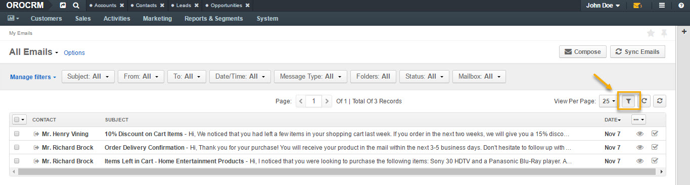
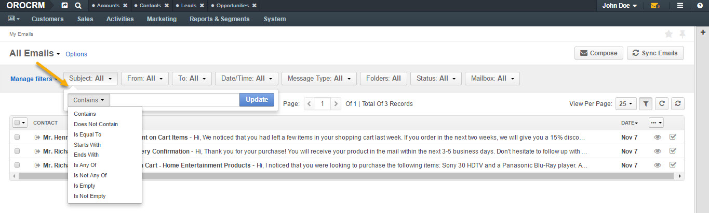
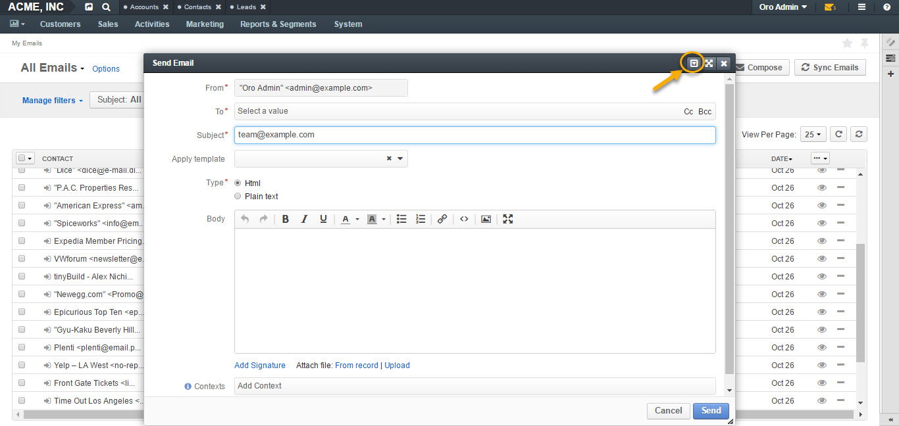
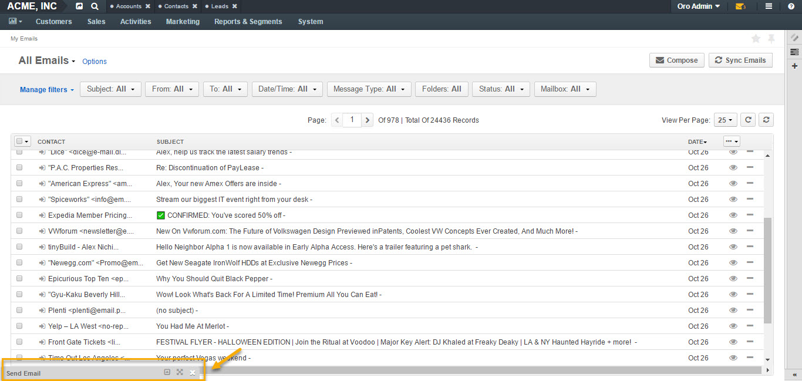
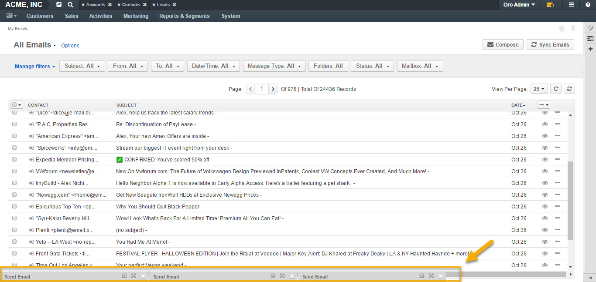
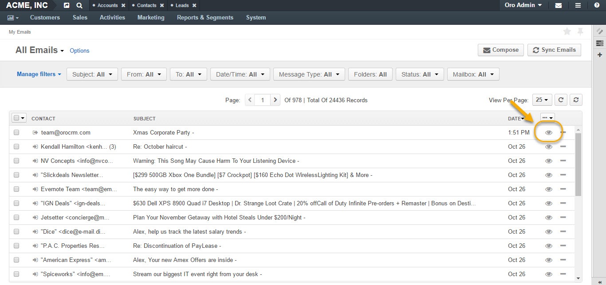
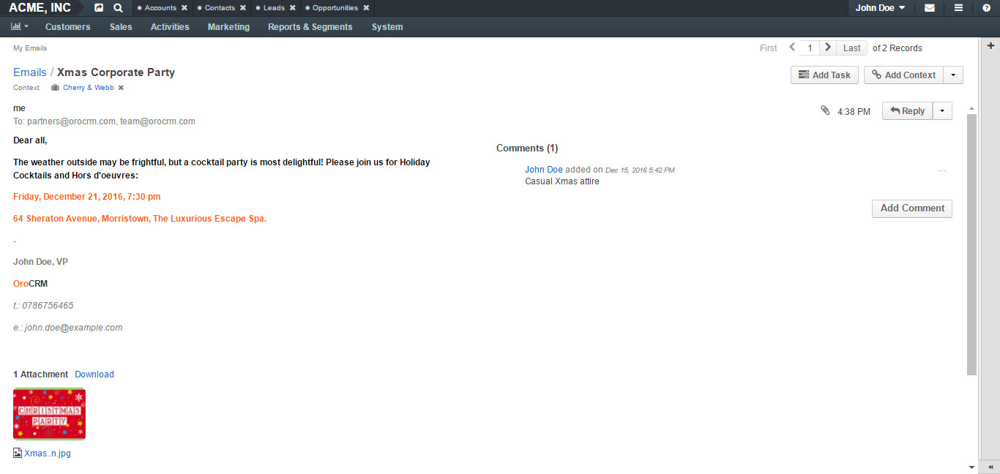
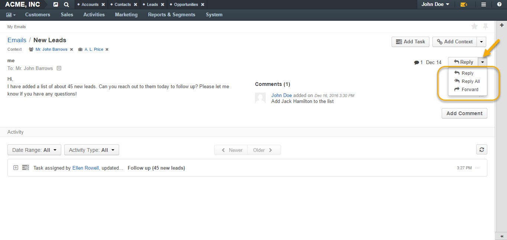
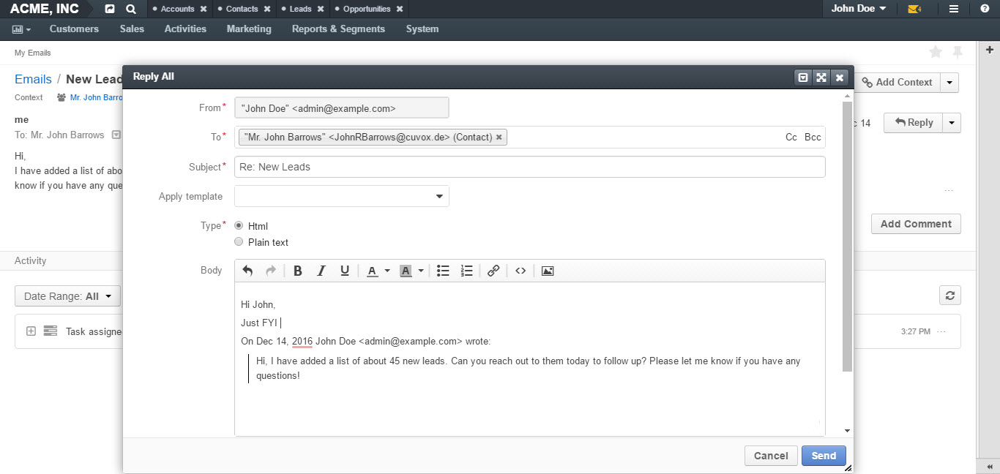
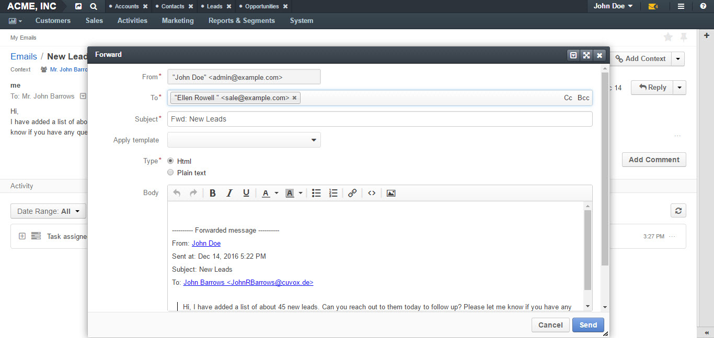

To reach the My Emails page:
My Emails page has the following functionality available:
There are four grid views for emails available by default:
To enable filters for My emails page, click the corresponding button on the right, as illustrated below:
Filters sort your emails based on certain criteria, such as:
To find a specific record, click on the filter and select the necessary search parameter from the drop-down:
Options save the filtered view as a separate page.
To save a page filtered according to the necessary criteria:
By clicking Sync Emails in the top right corner, you will synchronize emails manually.
To compose a new email:
To compose a new email, define the following fields in the form:
| Field | Description |
|---|---|
| From | The From field should contain the email address of the sender. Note that the primary email address is used as a default value and additional addresses are available in the selector for the From field. |
| To | The To field should contain the email(s) of the recipient(s). You can add more than one email to the field. Cc: Clicking Cc (carbon copy) will prompt a new field to appear to include more recipients to the emails whom the sender wishes to publicly inform of the message. Such recipients will be visible to all other recipients. Bcc: Clicking Bcc (blind carbon copy) will prompt a new field to appear to include those recipients whom the sender wishes to inform of the email discreetly. Such recipients are not visible to anyone. |
| Subject | Short, descriptive outline of the email message displayed in the mailbox of the recipients. |
| Apply Template | You can apply a pre-configured template for your email. |
| Type | Select the type of the message to be sent: HTML: The email will be coded so that the text is formatted and images are added. Plain: The email will contain plain text with no formatting or special layout options. |
| Body | Enter the text of your email. You can customize you email text using the following features: - Bold, Italic, Underline styles - Text color - Background color - Bullet List - Numbered List - Insert/Edit link - Source Code - Image Embed Upload - Fullscreen view |
| Add Signature | The signature may be added to any email you write in OroCRM. Your organization settings define whether the signature will be added automatically or manually. If you have a signature configured, you can add it by clicking Add Signature. For example: - John Doe, VP OroCRM t.: 0786756465 e.: john.doe@example.com For more information, see Add Signature To Your Email section of this guide. |
| Attach a file | You can attach a file from your PC or a related record. Click From a Record to re-use an attachment from another email in the thread or to choose an attachment assigned to the records. Click Upload and select the necessary file to be uploaded from your computer as an attachment to your email. . |
| Contexts | Context is any record or records that ha(s)ve meaningful relation to an email conversation. When you add context of a record to the email conversation, it will be displayed in the Activity section of that record’s page. Note: If an email has been created from an entity record view page (e.g. from a lead’s page), this record will be added as a context automatically. |
To save an unfinished email, minimize the email dialog window by clicking on the corresponding button in the top right corner of the email dialog window.
Your unfinished email will appear as a minimized window throughout sessions, as illustrated in the following screenshot:
You can save several of such emails as drafts:
To open an email, click once either on the email or the View icon at the right end of the email.
 From the page of the opened email, you can:
  